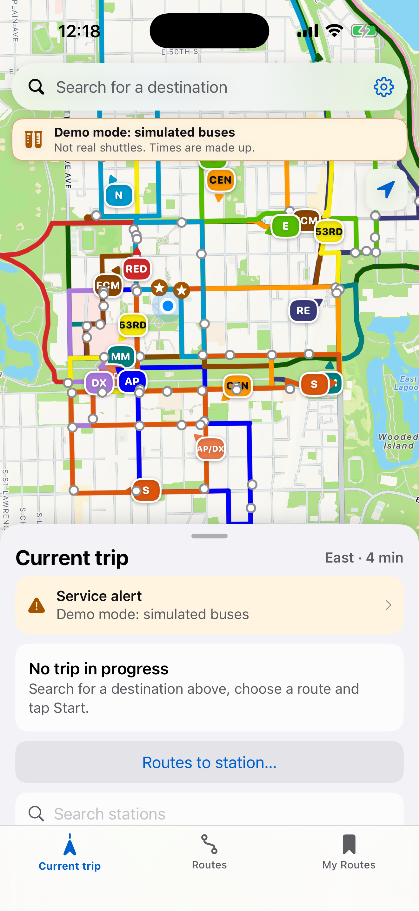
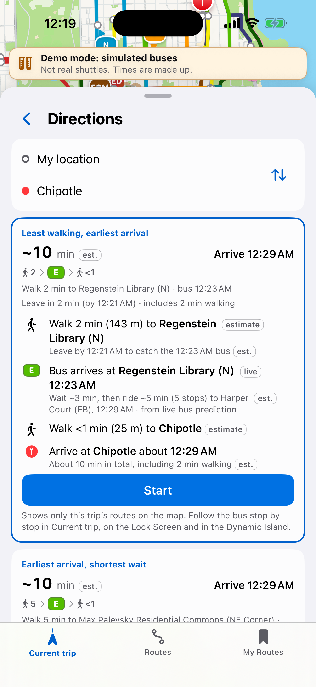
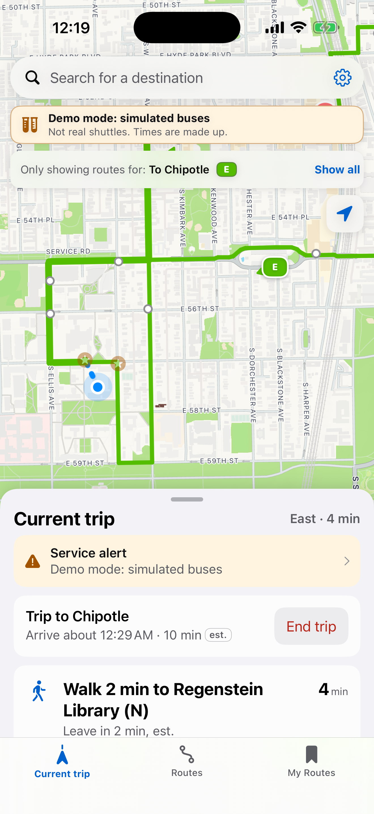
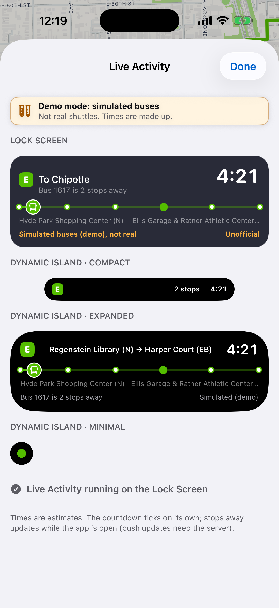
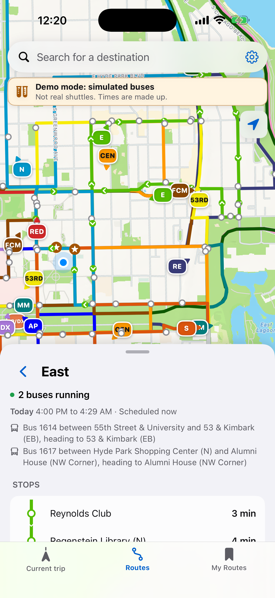
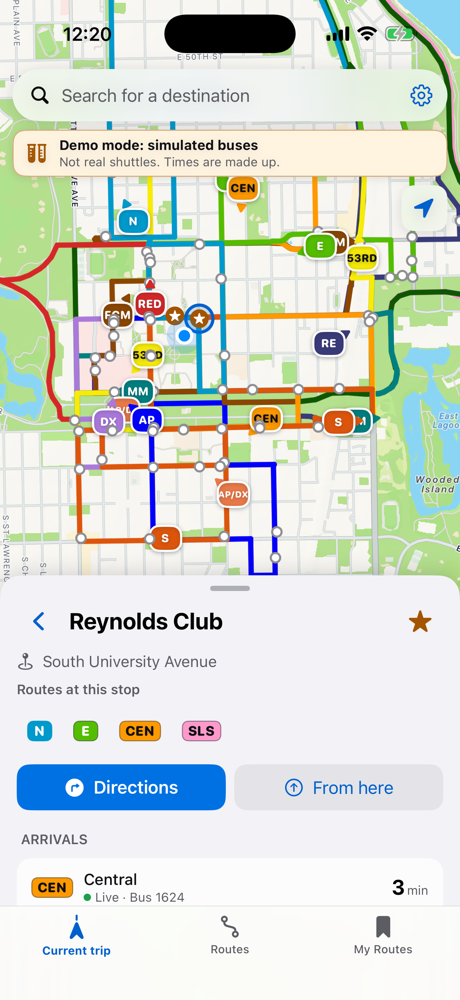

Straight Bussing: iPhone app (SwiftUI draft)
Built 2026-10-11 00:20 UTC from commit 60ac493 · CI run · iPhone 17 Pro
Simulated buses. These screens come from the real native app running in the iOS Simulator on GitHub's
macOS runners, in demo mode: buses are generated from the published schedule so the pictures never depend on whether
shuttles are running. Unofficial student project, not affiliated with the University. Official service: 773.702.8181.
Web app: blobberus.github.io/straight-bussing · Source and docs:
ios/ (README explains the architecture and how to run it on a Mac).
Walk-through recordings light mode dark mode
Screens
Current trip: favorites, nearest stops with Leave-in guidance (no trip started) Trip started: Google-Maps-style stop timeline with the live bus Trip timeline, sheet expanded: walk, bus stops with ETAs, walk Directions: options ranked least walking > earliest arrival > shortest wait Routes: eye toggles, Show all / Hide all, Edit map order, groups by live status Route detail: stops with next ETA, buses on the rail, hours & service My Routes: custom routes (tap = show on map), favorites Stop detail: live arrivals, routes, directions from / to here Settings: theme, service alerts, bus alerts, Live Activity Live Activity preview: Lock Screen + Dynamic Island About: unofficial notice, official 773.702.8181, privacy, credits My Routes: swipe left for Details / Edit / Delete (UI test) Delete asks for confirmation (UI test) On-device place search: 'chipotle' (UI test) Directions > Start > trip timeline (UI test) Service alerts: severity, routes, time window (demo alert) Routes to station: nearest stops ringed on the map Place search with a spelling fix: 'regnstien' -> Showing results for Regenstein Custom route detail: showing on the map, routes with live status, Highlight Custom route editor: name, routes grouped by live status, Save / Delete Routes: Edit map order (drag handles, routes higher are drawn on top) Settings: Simulated buses (demo) switch, privacy policy link Simulated buses switched on in Settings: the demo banner appears (UI test, no -demo) Simulated buses: the demo banner with Turn off on every tab (UI test) App Store screenshots 6.9-inch display set from iPhone 17 Pro Max, light mode, PNG without alpha (App Store Connect scales it down for smaller iPhones). Simulated buses, labeled in every frame as in the app. Click a picture for the full-size file.

Live map and the next buses at the nearest stop 
Directions: walk + shuttle options, every time marked est. 
Trip in progress: follow your bus stop by stop 
Live Activity on the Lock Screen and in the Dynamic Island 
Route detail: stops, next times, where the buses are 
Stop: live arrivals and directions